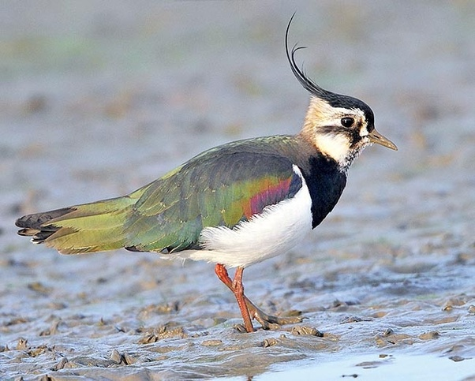

Am I Thinking About You? (.com)
updated every second
Yes
Here's a poem:
Sorry I haven't updated in a bit, been a hectic week/end. Hope to talk soon.
Church Going by Philip Larkin Once I am sure there's nothing going on I step inside, letting the door thud shut. Another church: matting, seats, and stone, And little books; sprawlings of flowers, cut For Sunday, brownish now; some brass and stuff Up at the holy end; the small neat organ; And a tense, musty, unignorable silence, Brewed God knows how long. Hatless, I take off My cycle-clips in awkward reverence, Move forward, run my hand around the font. From where I stand, the roof looks almost new- Cleaned or restored? Someone would know: I don't. Mounting the lectern, I peruse a few Hectoring large-scale verses, and pronounce "Here endeth" much more loudly than I'd meant. The echoes snigger briefly. Back at the door I sign the book, donate an Irish sixpence, Reflect the place was not worth stopping for. Yet stop I did: in fact I often do, And always end much at a loss like this, Wondering what to look for; wondering, too, When churches fall completely out of use What we shall turn them into, if we shall keep A few cathedrals chronically on show, Their parchment, plate, and pyx in locked cases, And let the rest rent-free to rain and sheep. Shall we avoid them as unlucky places? Or, after dark, will dubious women come To make their children touch a particular stone; Pick simples for a cancer; or on some Advised night see walking a dead one? Power of some sort or other will go on In games, in riddles, seemingly at random; But superstition, like belief, must die, And what remains when disbelief has gone? Grass, weedy pavement, brambles, buttress, sky, A shape less recognizable each week, A purpose more obscure. I wonder who Will be the last, the very last, to seek This place for what it was; one of the crew That tap and jot and know what rood-lofts were? Some ruin-bibber, randy for antique, Or Christmas-addict, counting on a whiff Of gown-and-bands and organ-pipes and myrrh? Or will he be my representative, Bored, uninformed, knowing the ghostly silt Dispersed, yet tending to this cross of ground Through suburb scrub because it held unspilt So long and equably what since is found Only in separation – marriage, and birth, And death, and thoughts of these – for whom was built This special shell? For, though I've no idea What this accoutred frowsty barn is worth, It pleases me to stand in silence here; A serious house on serious earth it is, In whose blent air all our compulsions meet, Are recognised, and robed as destinies. And that much never can be obsolete, Since someone will forever be surprising A hunger in himself to be more serious, And gravitating with it to this ground, Which, he once heard, was proper to grow wise in, If only that so many dead lie round.
Here's a picture
The national bird of Ireland, the Northern Lapwing.
